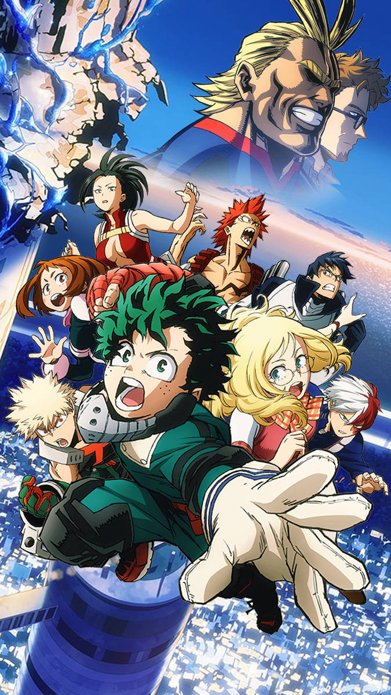

My Hero Academia (Japanese: 僕のヒーローアカデミア, Hepburn: Boku no Hīrō Akademia) is a Japanese superhero manga series written and illustrated by Kōhei Horikoshi. The story follows Izuku Midoriya, a boy born without superpowers in a world where they have become commonplace, but who still dreams of becoming a superhero himself. He is scouted by All Might, Japan's greatest hero, who chooses Midoriya as his successor after recognizing his potential, and helps to enroll him in a prestigious high school for superheroes in training. The series has been serialized in Shueisha's Weekly Shōnen Jump since July 2014, with its chapters additionally collected into 33 tankōbon volumes as of February 2022. The series has also inspired numerous spin-off manga, such as My Hero Academia: Smash!!, My Hero Academia: Vigilantes and My Hero Academia: Team-Up Missions, as well as an anime television series by Bones. Its first season aired in Japan from April to June 2016, followed by a second season from April to September 2017, then a third season from April to September 2018, a fourth season from October 2019 to April 2020, a fifth season from March to September 2021, and an upcoming sixth season. It has also received three animated films, titled My Hero Academia: Two Heroes, My Hero Academia: Heroes Rising, and My Hero Academia: World Heroes' Mission respectively. There are plans for a live-action film by Legendary Entertainment. Both the manga and anime adaptation have received an overwhelming positive response from both critics and audiences, and are considered one of the best of the 2010s, with winning several awards including the 2019 Harvey Award for Best Manga. As of January 2022, the manga had over 65 million copies in circulation worldwide.
